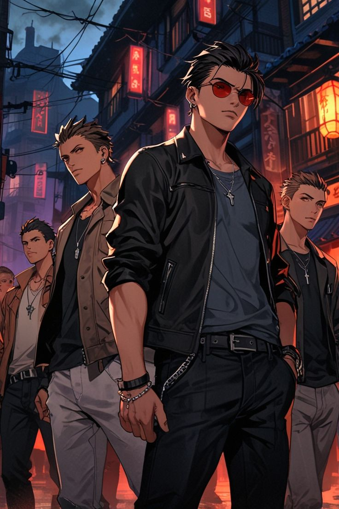
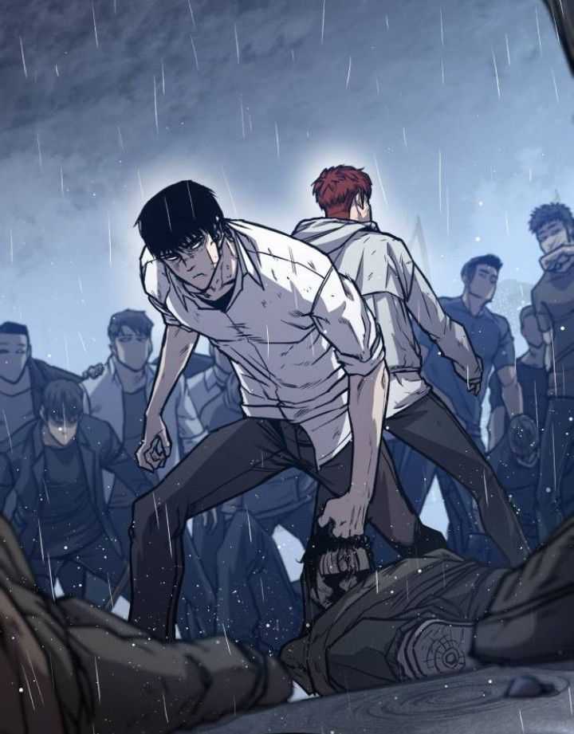

Dimensão Arcana
Guerreiros do Asfalto
Introdução
Os jogadores são jovens adultos que conseguiram passar no vestibular de uma das universidades particulares mais conceituadas do país, a Universidade Monte Alvorada, localizada na cidade de MonteBello, no litoral de São Paulo, próxima a Santos e São Vicente.

Eles ingressaram na universidade por meio de cotas, bolsa integral obtida no vestibular ou por pagamento. Independentemente da forma de ingresso, todos se mudaram para MonteBello, onde fica o polo principal da instituição, para dar início à construção de seus futuros. Porém, ao chegarem à cidade, deparam-se não apenas com a beleza e diversidade de um município fundado por imigrantes no início da história do país, mas também com um submundo violento de gangues e disputas de rua. Agora, além dos desafios típicos da vida universitária e da transição para a vida adulta, os jogadores precisarão enfrentar lutas intensas e se unir para sobreviver.

Os jogadores terão quatro pontos para distribuir na ficha, podendo adquirir até dois pontos em desvantagens. Também será permitido assumir mais desvantagens, mas sem receber pontos adicionais por isso (Obs: sejam criteriosos ao escolher suas desvantagens — no sistema 3D&T, mesmo as de -1 ponto podem ser bastante limitantes).
Além disso, será permitido que apenas um dos jogadores adquira a vantagem Genialidade.